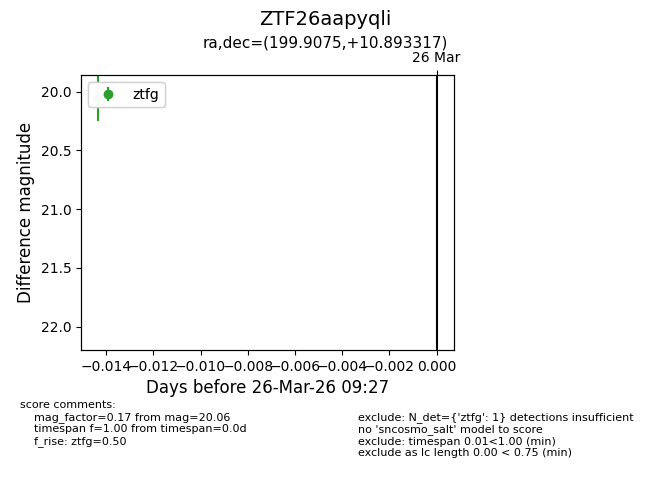
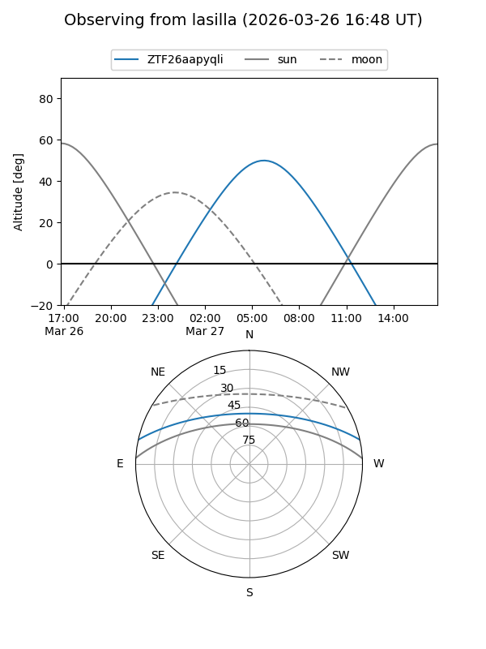
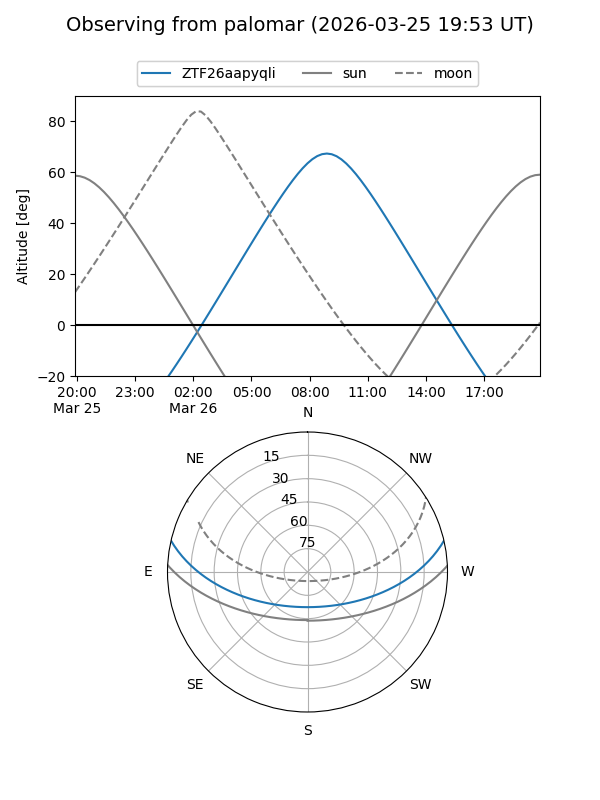

ZTF26aapyqli
Target ZTF26aapyqli at 2026-03-26 09:29
Aliases and brokers:
FINK: link
Lasair: link
ALeRCE: link
alt names
ZTF26aapyqli (ztf,fink_ztf)
Coordinates:
equatorial (ra, dec) = 199.9075,+10.89332
equatorial (HMS+DMS) = 13:19:37.80,+10:53:35.94
galactic (l, b) = (326.5013,+72.46243)
Flags:
Photometry:
last ztfg=20.06
1 ztfg detections
Lightcurve

Visibility


Additional plots